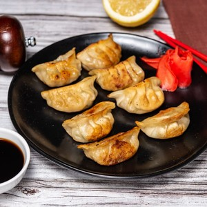

|
Фузилли с кальмаромКлассическая итальянская паста в виде спиралииз твёрдых сортов пшеницы, с прекрасным кальмаром в чесночно - сливочным соусом, посыпанная сверху стружкой из пармезана и капельками соуса песто. |
 |
Том ЯмТом ям - кисло-острый суп с креветками, курицей, рыбой или другими морепродуктами, национальное блюдо Таиланда. В Тайланде не существует единственно верного, канонического рецепта супа том-ям. |
|  |
ГёдзаГёдза - японские жареные пельмени. По сравнению с русскими пельменями они лёгкие, не оставляют чувства тяжести,сильного насыщения. В них сравнительно мало теста (и оно очень тонкое, невесомое) и много начинки. Начинка у гедза может быть любой: овощная, рыбная, мясная. |
Суши-бар «Йокогама»